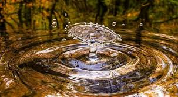

INICIO
Curiosidades
Curiosidades sobre el Agua:
- El agua cubre el 71% de la superficie terrestre, pero solo el 2.5% es agua dulce.
Y de esa, menos del 1% está disponible para el consumo humano..
- El cuerpo humano está compuesto en un 60-70% de agua, aunque esto varía según la edad y el sexo.
- El agua es el único elemento que puede encontrarse en los tres estados físicos de la materia
(sólido, líquido y gaseoso) de forma natural en la Tierra.
- El hielo flota porque es menos denso que el agua líquida, lo cual es una rareza entre los compuestos y permite la vida en lagos congelados.
- Se necesitan unos 15,000 litros de agua para producir un solo kilo de carne de res (contando el agua usada en alimento, bebida, limpieza, etc.).
- Los océanos contienen el 97% del agua del planeta, pero al ser salada, no es apta para consumo sin desalinización.
- El agua es un excelente disolvente, razón por la cual también se la conoce como el “disolvente universal”.
- El vapor de agua es un gas de efecto invernadero más potente que el dióxido de carbono, aunque su concentración en la atmósfera depende de la temperatura.
- Existen regiones del mundo donde la gente camina varios kilómetros al día solo para obtener agua, muchas veces no potable.
- Alrededor de 1 de cada 3 personas en el mundo no tiene acceso a agua potable segura en el hogar, según datos de la ONU.
- El agua puede romper rocas con el tiempo, mediante el proceso de congelación y descongelación que causa grietas.
- El agua pura no conduce electricidad, pero el agua con impurezas o minerales sí lo hace.
- En promedio, una persona necesita beber al menos 2 litros de agua al día para mantenerse bien hidratada.
